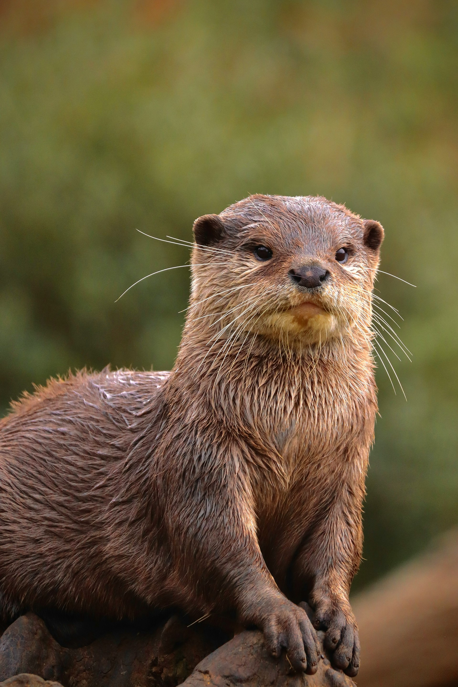

OTTER
Result
カワウソタイプ
水辺の小さな探検家
好奇心いっぱいで、仲間と遊びながら世界を確かめたいタイプです。
でも、知ってほしいこと
水辺を泳ぎ、潜り、探り、仲間と関わる時間が足りない場所では、その明るさは少しずつ削られてしまいます。
自然では
家族群で暮らし、水中と陸上を行き来しながら魚や甲殻類などを探します。
カフェでは
水場の広さ、休める場所、来場者から離れる自由、由来の透明性が大切です。

Result
好奇心いっぱいで、仲間と遊びながら世界を確かめたいタイプです。
水辺を泳ぎ、潜り、探り、仲間と関わる時間が足りない場所では、その明るさは少しずつ削られてしまいます。
家族群で暮らし、水中と陸上を行き来しながら魚や甲殻類などを探します。
水場の広さ、休める場所、来場者から離れる自由、由来の透明性が大切です。
福祉
半水生で社会性があり、水中と陸上を行き来して探す行動が重要です。
取引
由来、繁殖方針、記録管理の説明が大切です。
保全
湿地や河川環境と結びつき、地域によっては生息地の変化や取引圧の影響を受けます。
感染症
咬傷事故や衛生管理も重要です。人・動物・環境の健康を一緒に考えます。